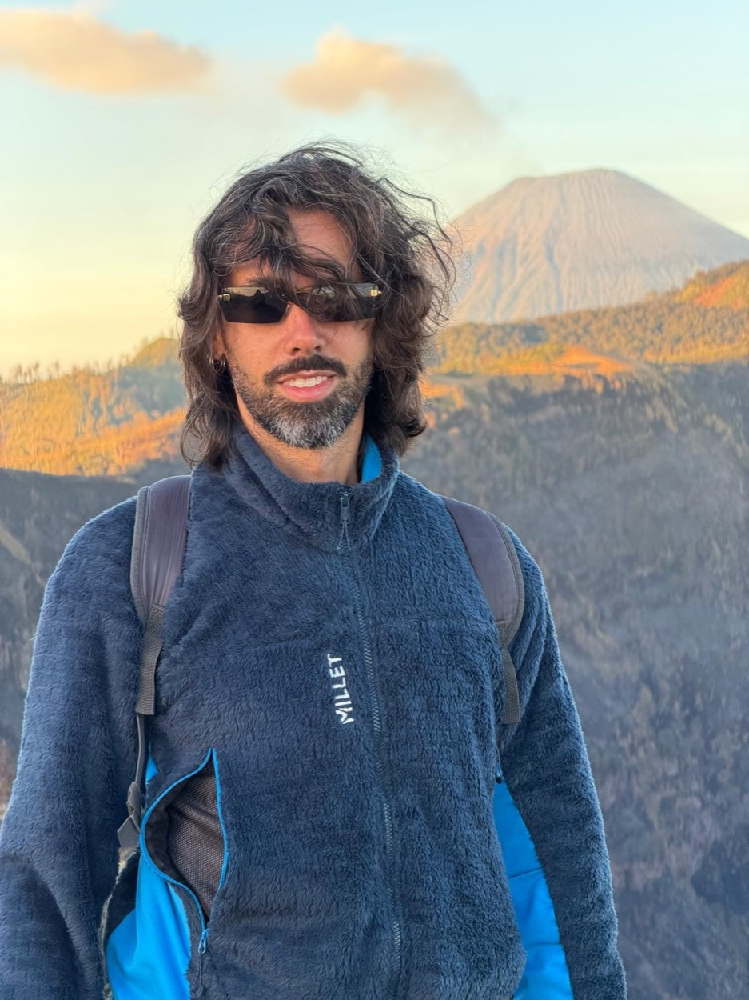
Manfredi Tocci
Coordinatore di Avventure nel Mondo, cod. 3032
Scorri la foto o trascina la linea
Sono un partecipante come gli altri, solo con qualche pensiero in più.
Mi piacciono i posti più wild e autentici e le giornate intense con la sveglia presto, anche a discapito della comodità. Il gruppo fa il 90% dell'esperienza: spirito di adattamento, rispetto, puntualità e ironia (e non solo…). Mi piace raccontare il viaggio con foto e video.
Prossime partenze
Dove sono già stato
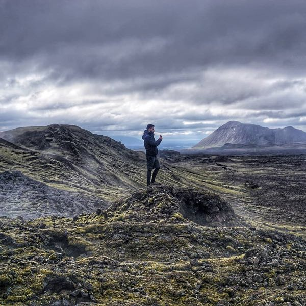
Islanda Discovery2019, da partecipante. Scheda del viaggio.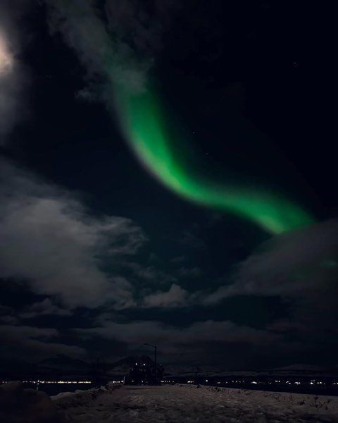
Lofoten Aurore Boreali Discovery2022, da partecipante. Scheda del viaggio.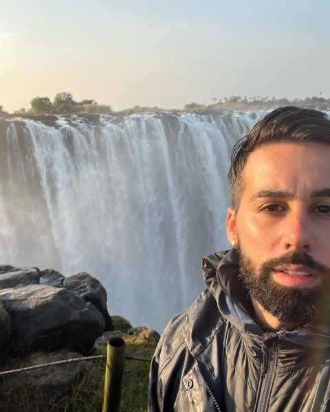
Kalahari Botswana Discovery2022, da partecipante. Scheda del viaggio.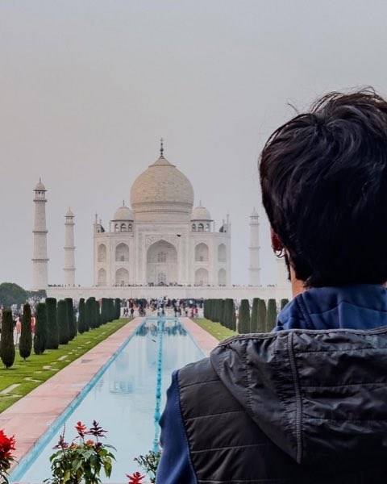
Delhi Varanasi Discovery2023, da partecipante. Scheda del viaggio.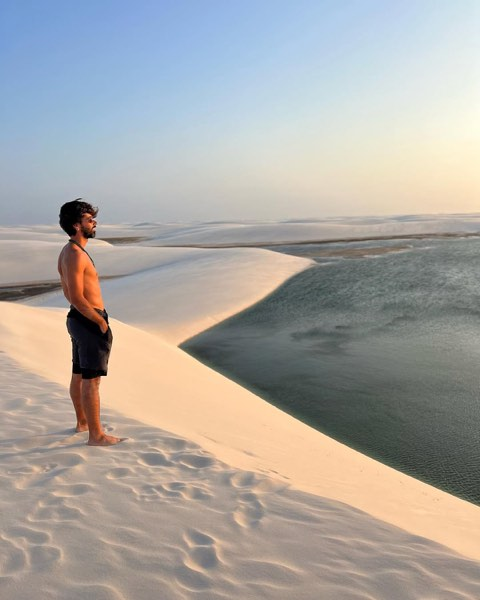
Maranhão Brasile Discovery2023, da partecipante. Scheda del viaggio.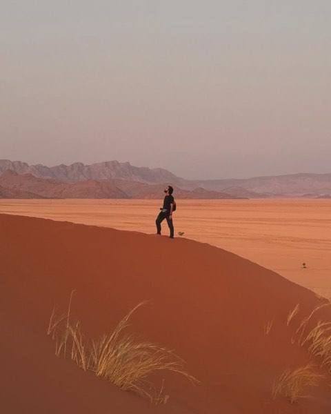
Namibia Discovery2024, da partecipante. Scheda del viaggio.- Cappadocia Discovery2024, da partecipante. Scheda del viaggio.
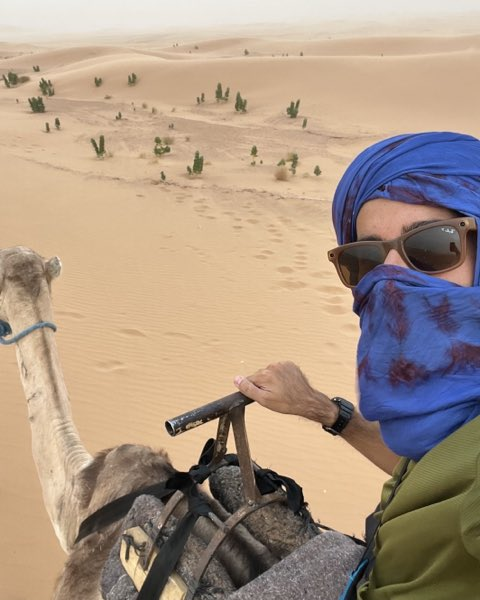
Marocco Discovery2025, da coordinatore. Scheda del viaggio.Partendo a fine luglio aspettiamoci TANTO CALDO. Si suda, ma si vive.
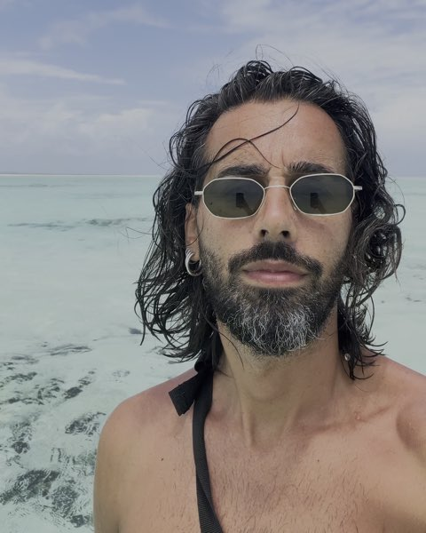
Zanzibar Express Discovery2025, da coordinatore. Scheda del viaggio.Pemba non si può saltare.
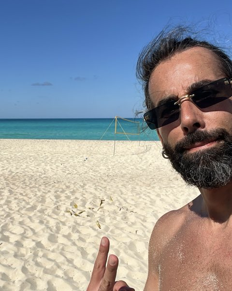
Cuba Express Discovery2025, da coordinatore. Scheda del viaggio.Meglio saperlo ora, che nel mezzo di un blackout a Trinidad.
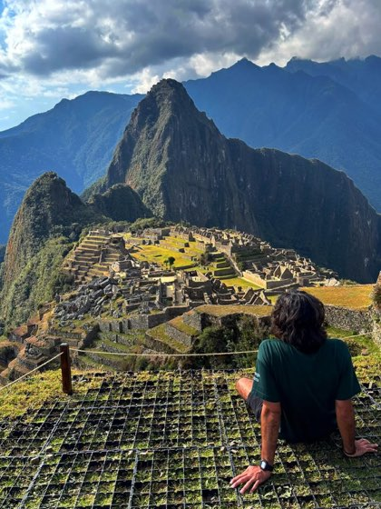
Perù Discovery2026, da coordinatore. Scheda del viaggio.L'altitudine sarà il diciassettesimo membro del gruppo, non sempre simpatico.
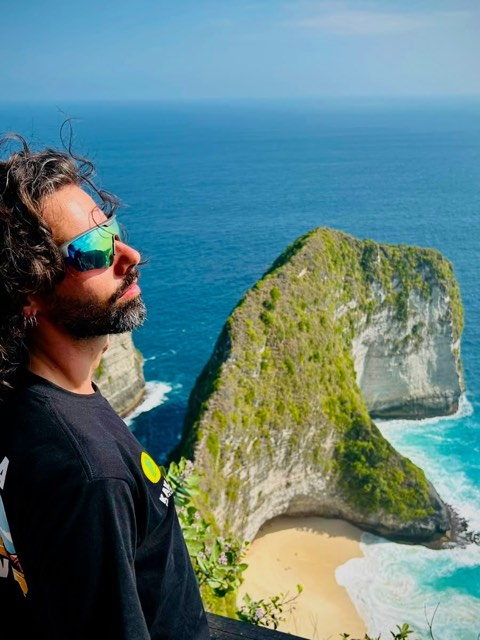
Giava Bali Gili Discovery2026, da coordinatore. Scheda del viaggio.